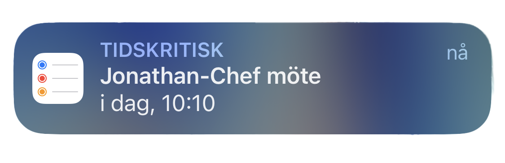
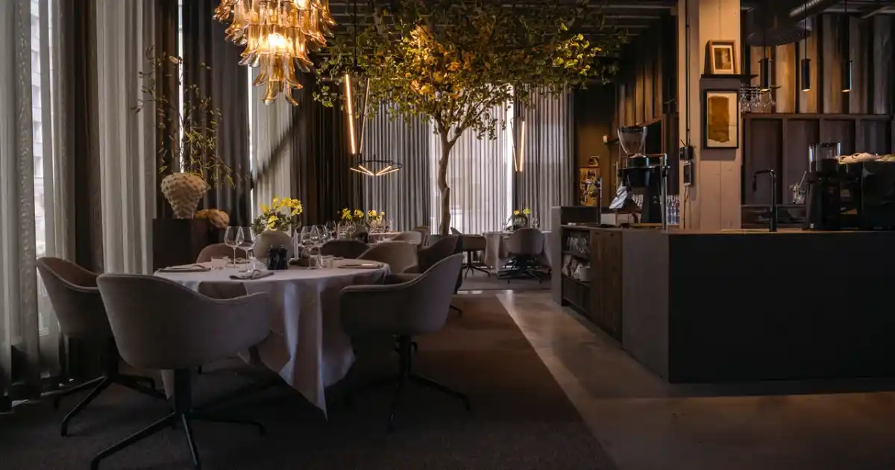

DEL 3
MIAS BESLUT
Bara någon minut efter lappens innebörd uppenbarar sig för Mia, piper en notifikation till i hennes telefon. Tio över tio visar klockan:
Det är dags att ta sig till den där restaurangen på andra sidan den röda bron. Gjuteriet vill hon minnas att den hette.

Kära läsare.
Du kan nu ta dig till Gjuteriet.
"Har du bokat bord?” frågar den unga kvinnan som möter Mia vid entren av restaurangen La Fonderie.
Bakom henne ser Mia Jonathan, han möter hennes blick och börjar vinka åt henne. “Jag är här med min chef, det är den flintskalliga mannen där borta” säger hon och nickar i mannens riktning.
Hon ler jakande och gestikulerar inåt mot uteserveringen. Genom rörelsen av att hon sätter sig ner märks det skiftet lappens position gör i hennes ficka. Innan hon hinner säga något om den eller ens så mycket som ett “hej” börjar Jonathan. “Så där, skönt med sovmorgon förmodar jag men nu får vi börja med dagen”.

Mia reagerar. Som om sovmorgon var hennes idé? Det är en så typisk chefs sak att säga.Hon väljer att inte säga något och fortsätter med dagens agenda.
“Om jag inte missminner mig har vi ett möte på dockan senare, det hade varit bra om du var där för att anteckna iallafall en del av mötet. Har du något annat på mitt schema för dagen?”
Mia går över hans schema, fyller i de punkterna han missat och nämner även att hans fru Camilla är på SVT en stor del av eftermiddagen.
“Och ja, det är väl ungefär det hela”. Hon pausar och känner hur lappen glöder i fickan.
Borde hon visa den för Camilla eller ge tillbaka den till Jonathan? Vill hon riskera att förlora sitt jobb? Det är ju ett bra jobb överlag, Jonathan betalar henne väl, men något inom henne skriker. Camilla borde få veta, Mia vet hur smärtsamt det är att bli bedragen. Men det man inte vet, har man inte ont av. Camilla är från en annan värld, en affär skulle inte röra henne i ryggen.
Deras äktenskap måste ändå vara starkare, finare och större än en tonårskärlek under gymnasietiden, där pojkvännens största hobby visade sig vara otrohet. Men alla är vi bara människor, vi gör fel. Men en lögn är också en lögn. - “vad ska jag göra?” tänker Mia.

Vad ska Mia göra? Ska hon lämna lappen till Jonathan eller försöka ge lappen till hans fru, Camilla?
Jonathan
Camilla